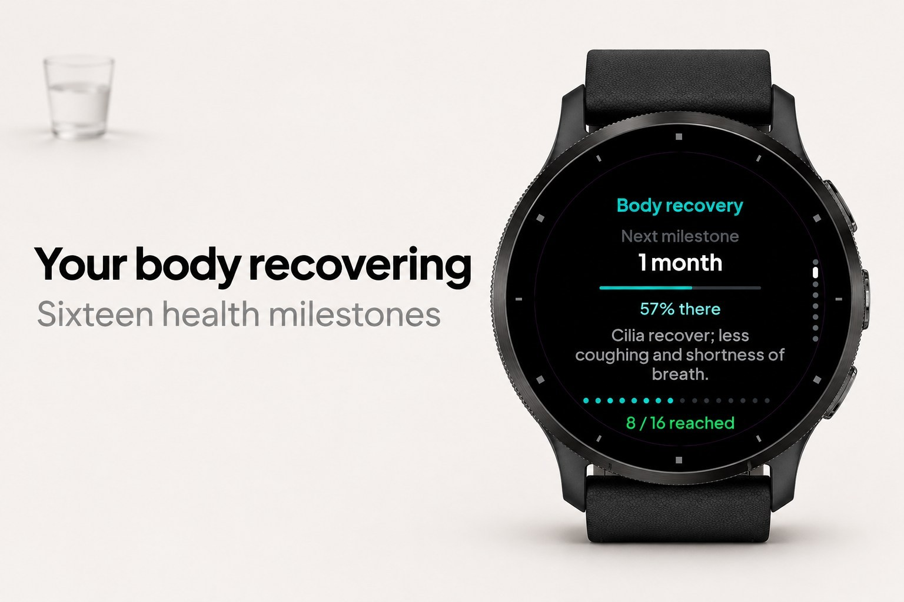
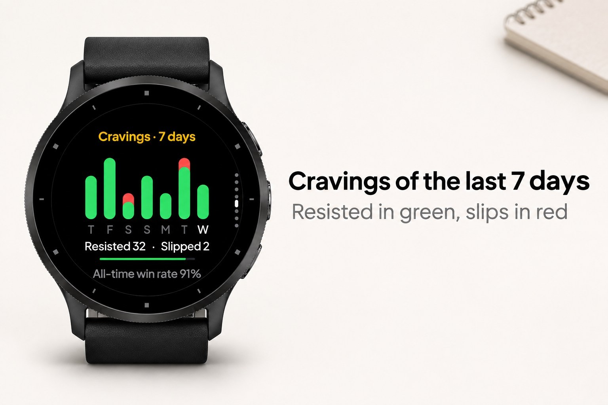
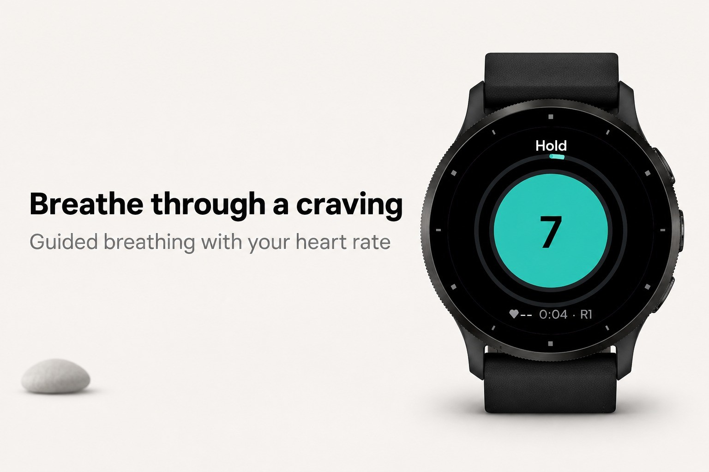
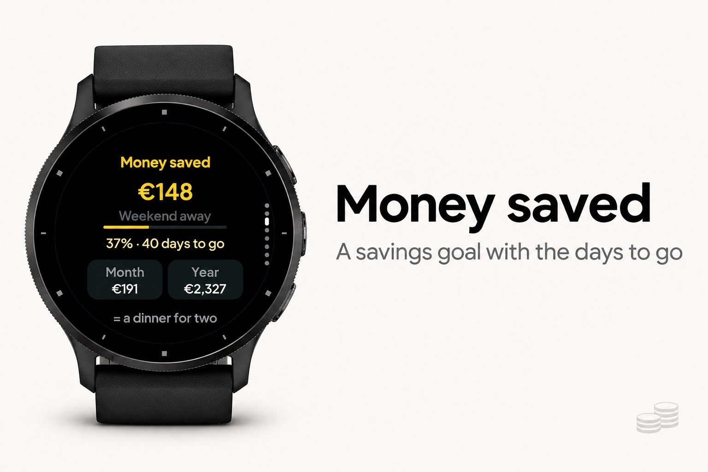

Smokeless
Quit-smoking tracker with cravings and savings.





Smokeless turns quitting into something you can see on your wrist: how long you have been smoke-free, what you have saved, what your body is repairing right now, and what to do when the craving hits.
Set your quit moment and the app starts counting. Quit last week, last month or years ago? Pick the date and everything is calculated from there. Works for cigarettes, vaping and nicotine pouches.
Eight screens, one swipe apart
- Dashboard — a ring filling toward your next health milestone, your smoke-free time down to the second, and the money saved so far
- Body recovery — 16 milestones from 20 minutes to 15 years, each with what is actually happening: heart rate settling, carbon monoxide clearing, circulation and lungs improving, risk dropping
- Money and goal — what you have saved, what it buys in everyday terms, and your own savings goal with the days left until you reach it
- Cravings, seven days — resisted against slipped as stacked bars, with your win rate
- Triggers — your top triggers ranked, your toughest hour of the day, and a 24-hour picture of when cravings hit
- Badges — sixteen to unlock, for time clean, cravings resisted, money saved and breathing sessions done
- Why I quit — your own reasons, in your words, plus a rotating line of encouragement when you have not written any
When a craving hits
Open the craving flow and breathe through it. Choose 4-7-8, box breathing or a calm 4-6 rhythm; your heart rate is shown live and the app tells you how many beats per minute you have come down. A three-minute urge ring runs alongside, because that is roughly how long a craving lasts.
Afterwards you log what happened — resisted or slipped — and which trigger it was: stress, coffee, alcohol, boredom, after a meal, other people, and more. If you slipped, you decide yourself whether the streak stands or the clock restarts; your best streak is banked either way, so you never lose what you already did.
It keeps up with you
Milestone alerts when your body reaches the next stage, a nudge when a badge unlocks, a daily check-in at an hour you choose, and — once the app knows your pattern — a heads-up one hour before your personal danger hour. The glance on your watch face shows your smoke-free time, your savings and the next milestone without opening the app at all.
Make it yours
In Garmin Connect you set your product (cigarettes, vape, pouches), how much you used per day, pack size, price and currency, nicotine strength, your savings goal, up to three personal reasons, your breathing pattern, the reminder hour and the language.
Interface in English, Dutch, German, French and Spanish. Everything stays on the watch: no account, no internet connection, no data sent anywhere.
Smokeless is not medical advice. If you need help quitting, talk to your doctor about the options.